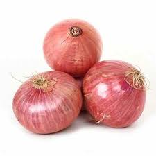
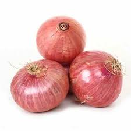

About Organic Farming
Organic farming is a method of farming that relies on crop rotation, green manure, compost, and biological pest control to maintain soil health and ecosystem balance. Unlike conventional farming, it avoids synthetic fertilizers and pesticides.
Organic farming is a holistic approach to agriculture that emphasizes the use of natural methods to cultivate crops and raise livestock. It avoids the use of synthetic chemicals, pesticides, and fertilizers, relying instead on techniques such as crop rotation, composting, and natural pest control.
The goal of organic farming is to maintain healthy soils, promote biodiversity, and reduce environmental impact while producing high-quality, nutritious food.By prioritizing sustainability, organic farming works in harmony with nature, supporting ecological balance and helping to protect the environment for future generations. This method of farming also promotes the well-being of farmers and local communities by reducing exposure to harmful chemicals and fostering more resilient farming systems.
Benefits of Organic Farming
 

- Soil Health
- Biodiversity
- Healthier Food
- Animal Welfare
- Reduced Chemical Exposure
- Climate Change Mitigation
- Sustainable Economic Growth
- Environmental Sustainability
- Reduced Dependence on Fossil Fuels
- Better Taste and Quality